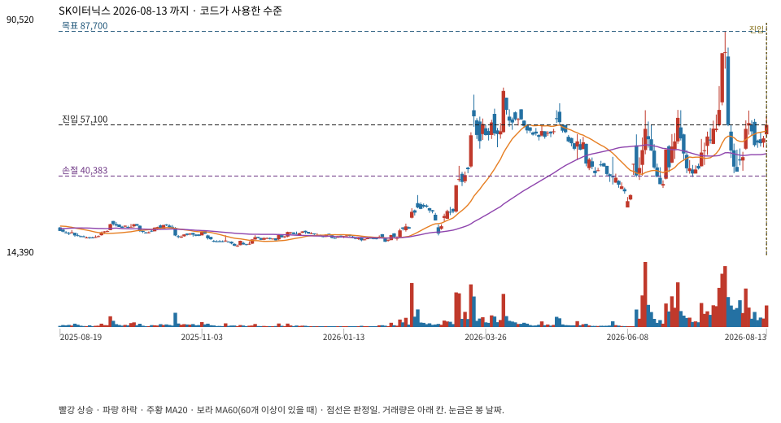

당일까지의 완료봉만 다시 넣었다. 불일치는 고치지 않고 기록한다. 눌림 시작 고점·저점은 코드가 저장하지 않아 정답처럼 표시하지 않는다.

{
"rising_structure": true,
"atr_valid": true,
"valid_zone": true,
"near_ma20": true,
"volume_contracted": true,
"recovery_close": true,
"bullish_candle": true,
"volume_recovery": true,
"fresh_confirmation": true
}| 창 | 날짜 | 봉 | 창 안 최저 | 창 안 최고 |
|---|---|---|---|---|
| 추세 비교 최근 20봉 | 2026-07-16 ~ 2026-08-13 | 20 | 저 2026-07-29 / 41300 | 고 2026-07-24 / 87700 |
| 추세 비교 직전 20봉 | 2026-06-18 ~ 2026-07-15 | 20 | 저 2026-06-24 / 36450 | 고 2026-07-01 / 62000 |
| 근접 확인 직전 5봉 | 2026-08-06 ~ 2026-08-12 | 5 | 저 2026-08-10 / 49600 | 고 2026-08-07 / 59100 |
| 손절 기준 최근 10봉 | 2026-07-31 ~ 2026-08-13 | 10 | 저 2026-08-03 / 42100 | 고 2026-08-05 / 61800 |
| 목표 기준 마지막 봉 제외 20봉 | 2026-07-15 ~ 2026-08-12 | 20 | 저 2026-07-29 / 41300 | 고 2026-07-24 / 87700 |
| 거래량 기준 20봉 | 2026-07-10 ~ 2026-08-07 | 20 | 저 2026-07-29 / 41300 | 고 2026-07-24 / 87700 |
| 눌림 거래량 3봉 | 2026-08-10 ~ 2026-08-12 | 3 | 저 2026-08-10 / 49600 | 고 2026-08-11 / 54800 |
| 확인 봉 | 2026-08-13 ~ 2026-08-13 | 1 | 저 2026-08-13 / 53200 | 고 2026-08-13 / 59900 |
MA20 55077.5 · 직전 MA20 53717.5 · ATR14 8582.1429 · 근접 기준 61514.107175 · 손절 원값 40383.57142 · 목표 원값 87700 · 거래량비 0.34702637141288
{
"final_status": "ready",
"final_ready": true,
"selected_pattern": "trend_pullback_v1",
"reason": "상승 추세 눌림 후 고점 회복 확인",
"context": {
"daily": "up",
"weekly": "range",
"weekly_bars": 96,
"weekly_asof": 1786084200,
"label": "주봉 횡보 \/ 일봉 상승",
"warning": ""
},
"quality": {
"can_simulate": true,
"status": "warning",
"reasons": []
},
"features_risk": {
"spike_dump_status": "none",
"top_pattern_status": "none",
"top_pattern_phase": "none",
"playbook": {
"action": "add_on_pullback",
"size_hint": "가진 현금의 10~20%만, 최대 3번에 나눠서",
"rules": [
"레버\/인버스는 직접 사지 않고 본주 방향·차트 그림으로만 바꿔 대응",
"쫓아 사기 금지: 올라갈 때 사지 말고 내려올 때\/그림 회복만",
"사기 전에 손절선(최근 저점) 필수 기록",
"한 번에 현금 전액 금지, 나눠서 최대 3회",
"애매하면 지금은 안 삼",
"불법과외1: 수렴 돌파만 보고 추격 금지 — 돌파 후 윗구간 박스 확인",
"불법과외1: 선호캔들(장대양→도지→거래량없는장대음→장대양)은 매물대 돌파 후에만",
"고점판독: 돌파 실패→고점 하향→파동 중심·하단 시험→상승 추세선 이탈이면 신규 매수 금지",
"손절은 2단으로: 타이트=당일 저가, 넓게=여러 번 걸린 가로 매물대",
"익절은 2단으로: 1차=직전 고점, 2차=같은 폭을 위로 한 번 더(또는 그 사이 가로 저항)"
],
"reason": "475150.KS [account1]: 급락 후 저점 올림 + 중간 가격대 근접(점수 78). 내려올 때 나눠서 사기 후보. 손절선=54000",
"entry_zone": {
"low": 66072,
"high": 71578,
"mid": 68825,
"rule": "half_retrace_±4%"
},
"invalidation": 54000,
"target_hint": {
"price": 87700,
"rule": "structure_swing_high",
"wide": 125450,
"wide_rule": "measured_move_1x"
},
"blocked": false,
"profile": "account1"
}
}
}저장 진입·손절·목표와 재계산이 같다.
좌표 미기록: pullback_interval_start
{
"case_id": "701abd672d3bc57e",
"symbol": "475150.KS",
"session_date": "2026-08-13",
"recomputed_from": "ChartPlanEngine on completed bars through the signal day only",
"independent_strategy_implementation": false,
"quality": {
"can_simulate": true,
"status": "warning",
"reasons": []
},
"pullback": {
"version": "trend_pullback_v1",
"status": "ready",
"ready": true,
"reason": "상승 추세 눌림 후 고점 회복 확인",
"entry": 57100,
"stop": 40383,
"target": 87700,
"reward_risk": 1.83,
"candidate": {
"low": 51644,
"mid": 55077,
"high": 58510,
"stop": 40383,
"target": 87700,
"source": "trend_pullback_ma20",
"reward_risk": {
"low": 3.202,
"mid": 2.22,
"high": 1.61
},
"rr_basis": "before_costs"
},
"order_valid_bars": 3,
"gates": {
"rising_structure": true,
"atr_valid": true,
"valid_zone": true,
"near_ma20": true,
"volume_contracted": true,
"recovery_close": true,
"bullish_candle": true,
"volume_recovery": true,
"fresh_confirmation": true
},
"volume_contracted": true,
"target_rule": "prior_20_bar_high",
"signal_at": 1786602600
},
"gates": {
"rising_structure": true,
"atr_valid": true,
"valid_zone": true,
"near_ma20": true,
"volume_contracted": true,
"recovery_close": true,
"bullish_candle": true,
"volume_recovery": true,
"fresh_confirmation": true
},
"windows": {
"rising_recent": {
"label": "추세 비교 최근 20봉",
"missing": false,
"bar_count": 20,
"first_date": "2026-07-16",
"last_date": "2026-08-13",
"first_at": 1784183400,
"last_at": 1786602600,
"min_low": 41300,
"min_low_date": "2026-07-29",
"min_low_at": 1785306600,
"max_high": 87700,
"max_high_date": "2026-07-24",
"max_high_at": 1784874600
},
"rising_prior": {
"label": "추세 비교 직전 20봉",
"missing": false,
"bar_count": 20,
"first_date": "2026-06-18",
"last_date": "2026-07-15",
"first_at": 1781764200,
"last_at": 1784097000,
"min_low": 36450,
"min_low_date": "2026-06-24",
"min_low_at": 1782282600,
"max_high": 62000,
"max_high_date": "2026-07-01",
"max_high_at": 1782887400
},
"ma20_closes": {
"label": "MA20 종가 20봉",
"missing": false,
"bar_count": 20,
"first_date": "2026-07-16",
"last_date": "2026-08-13",
"first_at": 1784183400,
"last_at": 1786602600,
"min_low": 41300,
"min_low_date": "2026-07-29",
"min_low_at": 1785306600,
"max_high": 87700,
"max_high_date": "2026-07-24",
"max_high_at": 1784874600
},
"old_ma_closes": {
"label": "직전 MA20 종가 20봉",
"missing": false,
"bar_count": 20,
"first_date": "2026-07-09",
"last_date": "2026-08-06",
"first_at": 1783578600,
"last_at": 1785997800,
"min_low": 41200,
"min_low_date": "2026-07-09",
"min_low_at": 1783578600,
"max_high": 87700,
"max_high_date": "2026-07-24",
"max_high_at": 1784874600
},
"near_ma20": {
"label": "근접 확인 직전 5봉",
"missing": false,
"bar_count": 5,
"first_date": "2026-08-06",
"last_date": "2026-08-12",
"first_at": 1785997800,
"last_at": 1786516200,
"min_low": 49600,
"min_low_date": "2026-08-10",
"min_low_at": 1786343400,
"max_high": 59100,
"max_high_date": "2026-08-07",
"max_high_at": 1786084200
},
"stop_window": {
"label": "손절 기준 최근 10봉",
"missing": false,
"bar_count": 10,
"first_date": "2026-07-31",
"last_date": "2026-08-13",
"first_at": 1785479400,
"last_at": 1786602600,
"min_low": 42100,
"min_low_date": "2026-08-03",
"min_low_at": 1785738600,
"max_high": 61800,
"max_high_date": "2026-08-05",
"max_high_at": 1785911400
},
"target_window": {
"label": "목표 기준 마지막 봉 제외 20봉",
"missing": false,
"bar_count": 20,
"first_date": "2026-07-15",
"last_date": "2026-08-12",
"first_at": 1784097000,
"last_at": 1786516200,
"min_low": 41300,
"min_low_date": "2026-07-29",
"min_low_at": 1785306600,
"max_high": 87700,
"max_high_date": "2026-07-24",
"max_high_at": 1784874600
},
"volume_base": {
"label": "거래량 기준 20봉",
"missing": false,
"bar_count": 20,
"first_date": "2026-07-10",
"last_date": "2026-08-07",
"first_at": 1783665000,
"last_at": 1786084200,
"min_low": 41300,
"min_low_date": "2026-07-29",
"min_low_at": 1785306600,
"max_high": 87700,
"max_high_date": "2026-07-24",
"max_high_at": 1784874600
},
"volume_pull": {
"label": "눌림 거래량 3봉",
"missing": false,
"bar_count": 3,
"first_date": "2026-08-10",
"last_date": "2026-08-12",
"first_at": 1786343400,
"last_at": 1786516200,
"min_low": 49600,
"min_low_date": "2026-08-10",
"min_low_at": 1786343400,
"max_high": 54800,
"max_high_date": "2026-08-11",
"max_high_at": 1786429800
},
"signal_bar": {
"label": "확인 봉",
"missing": false,
"bar_count": 1,
"first_date": "2026-08-13",
"last_date": "2026-08-13",
"first_at": 1786602600,
"last_at": 1786602600,
"min_low": 53200,
"min_low_date": "2026-08-13",
"min_low_at": 1786602600,
"max_high": 59900,
"max_high_date": "2026-08-13",
"max_high_at": 1786602600
},
"values": {
"ma20": 55077.5,
"old_ma20": 53717.5,
"atr14": 8582.1429,
"near_threshold": 61514.107175,
"stop_raw": 40383.57142,
"target_raw": 87700,
"base_volume": 8153279.5,
"pull_volume": 2829403,
"volume_ratio": 0.34702637141287745
},
"pullback_interval_start": "unrecorded",
"note": "코드는 눌림 시작 고점·저점을 저장하지 않는다. 위 구간은 TrendPullback이 실제로 쓰는 고정 창이다."
},
"context": {
"daily": "up",
"weekly": "range",
"weekly_bars": 96,
"weekly_asof": 1786084200,
"label": "주봉 횡보 \/ 일봉 상승",
"warning": ""
},
"final_status": "ready",
"final_ready": true,
"selected_pattern": "trend_pullback_v1",
"common_reason": "상승 추세 눌림 후 고점 회복 확인",
"features_risk": {
"spike_dump_status": "none",
"top_pattern_status": "none",
"top_pattern_phase": "none",
"playbook": {
"action": "add_on_pullback",
"size_hint": "가진 현금의 10~20%만, 최대 3번에 나눠서",
"rules": [
"레버\/인버스는 직접 사지 않고 본주 방향·차트 그림으로만 바꿔 대응",
"쫓아 사기 금지: 올라갈 때 사지 말고 내려올 때\/그림 회복만",
"사기 전에 손절선(최근 저점) 필수 기록",
"한 번에 현금 전액 금지, 나눠서 최대 3회",
"애매하면 지금은 안 삼",
"불법과외1: 수렴 돌파만 보고 추격 금지 — 돌파 후 윗구간 박스 확인",
"불법과외1: 선호캔들(장대양→도지→거래량없는장대음→장대양)은 매물대 돌파 후에만",
"고점판독: 돌파 실패→고점 하향→파동 중심·하단 시험→상승 추세선 이탈이면 신규 매수 금지",
"손절은 2단으로: 타이트=당일 저가, 넓게=여러 번 걸린 가로 매물대",
"익절은 2단으로: 1차=직전 고점, 2차=같은 폭을 위로 한 번 더(또는 그 사이 가로 저항)"
],
"reason": "475150.KS [account1]: 급락 후 저점 올림 + 중간 가격대 근접(점수 78). 내려올 때 나눠서 사기 후보. 손절선=54000",
"entry_zone": {
"low": 66072,
"high": 71578,
"mid": 68825,
"rule": "half_retrace_±4%"
},
"invalidation": 54000,
"target_hint": {
"price": 87700,
"rule": "structure_swing_high",
"wide": 125450,
"wide_rule": "measured_move_1x"
},
"blocked": false,
"profile": "account1"
}
},
"stored_levels": {
"entry": 57100,
"stop": 40383,
"target": 87700
},
"diffs": [],
"coordinates_missing": [
"pullback_interval_start"
],
"charts": {
"annotated": "b\/701abd672d3bc57e.svg"
}
}